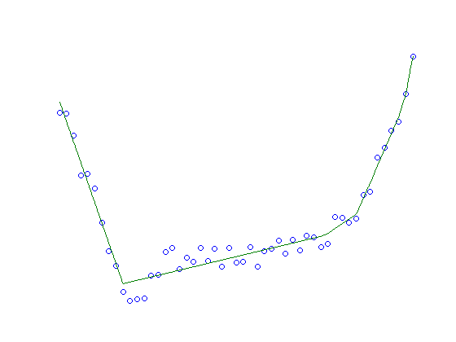

Figure 6.24: Fitting a convex function to given data
clear
rand('state',29);
noiseint=.05;
u = [0:0.04:2]';
m=length(u);
y = 5*(u-1).^4 + .6*(u-1).^2 + 0.5*u;
v1=u>=.2;
v2=u<=.6;
v3=v1.*v2;
dipvec=((v3.*u-.4*ones(1,size(v3,2))).^(2)).*v3;
y=y+40*(dipvec-((.2))^2*v3);
randf=noiseint*(rand(m,1)-.5);
yns=y+norm(y)*(randf);
figure
plot(u,yns,'o');
cvx_begin
variables yhat(m) g(m)
minimize(norm(yns-yhat))
subject to
yhat*ones(1,m) >= ones(m,1)*yhat' + (ones(m,1)*g').*(u*ones(1,m)-ones(m,1)*u');
cvx_end
nopts =1000;
t = linspace(0,2,nopts);
f = max(yhat(:,ones(1,nopts)) + ...
g(:,ones(1,nopts)).*(t(ones(m,1),:)-u(:,ones(1,nopts))));
plot(u,yns,'o',t,f,'-');
axis off
Calling sedumi: 2602 variables, 103 equality constraints
For improved efficiency, sedumi is solving the dual problem.
------------------------------------------------------------
SeDuMi 1.21 by AdvOL, 2005-2008 and Jos F. Sturm, 1998-2003.
Alg = 2: xz-corrector, Adaptive Step-Differentiation, theta = 0.250, beta = 0.500
eqs m = 103, order n = 2553, dim = 2604, blocks = 3
nnz(A) = 7701 + 1, nnz(ADA) = 7856, nnz(L) = 3980
Handling 1 + 1 dense columns.
it : b*y gap delta rate t/tP* t/tD* feas cg cg prec
0 : 3.00E-01 0.000
1 : -4.35E+00 1.06E-01 0.000 0.3543 0.9000 0.9000 0.64 1 1 3.2E+01
2 : -5.20E+00 3.10E-02 0.000 0.2918 0.9000 0.9000 1.49 1 1 7.2E+00
3 : -5.54E+00 7.73E-03 0.000 0.2488 0.9000 0.9000 1.39 1 1 1.5E+00
4 : -5.54E+00 1.65E-03 0.000 0.2139 0.9000 0.9000 1.18 1 1 2.9E-01
5 : -5.21E+00 5.21E-04 0.000 0.3154 0.9000 0.9000 1.03 1 1 9.2E-02
6 : -4.85E+00 3.41E-04 0.000 0.6548 0.8734 0.9000 0.88 1 1 6.9E-02
7 : -4.52E+00 2.56E-04 0.000 0.7514 0.9000 0.9026 0.85 1 1 5.4E-02
8 : -4.23E+00 2.00E-04 0.000 0.7794 0.9000 0.9048 0.82 1 1 4.3E-02
9 : -4.05E+00 1.66E-04 0.000 0.8315 0.9000 0.5951 0.81 1 1 3.6E-02
10 : -3.85E+00 1.42E-04 0.000 0.8517 0.9000 0.9000 0.75 1 1 3.2E-02
11 : -3.73E+00 1.21E-04 0.000 0.8577 0.9000 0.9000 0.87 1 1 2.7E-02
12 : -3.48E+00 9.74E-05 0.000 0.8021 0.9000 0.9000 0.79 1 1 2.2E-02
13 : -3.34E+00 7.84E-05 0.000 0.8051 0.9000 0.9000 0.91 1 1 1.8E-02
14 : -3.06E+00 5.78E-05 0.000 0.7370 0.9000 0.9000 0.84 1 1 1.4E-02
15 : -2.92E+00 4.17E-05 0.000 0.7211 0.9000 0.9000 0.95 1 1 1.0E-02
16 : -2.67E+00 2.67E-05 0.000 0.6399 0.9000 0.9000 0.90 1 1 6.6E-03
17 : -2.56E+00 1.63E-05 0.000 0.6125 0.9000 0.9000 0.98 1 1 4.0E-03
18 : -2.44E+00 9.40E-06 0.000 0.5760 0.9000 0.9000 0.96 1 1 2.3E-03
19 : -2.37E+00 5.18E-06 0.000 0.5512 0.9000 0.9000 0.95 1 1 1.3E-03
20 : -2.32E+00 2.41E-06 0.000 0.4649 0.9000 0.9000 0.96 1 1 6.2E-04
21 : -2.29E+00 8.75E-07 0.000 0.3629 0.9000 0.9000 0.96 1 1 2.3E-04
22 : -2.28E+00 2.88E-07 0.000 0.3294 0.9000 0.9000 1.00 1 1 7.5E-05
23 : -2.27E+00 2.45E-08 0.000 0.0849 0.9900 0.9900 1.00 1 1 6.4E-06
24 : -2.27E+00 6.63E-09 0.000 0.2710 0.9000 0.9000 1.00 1 3 1.7E-06
25 : -2.27E+00 1.81E-09 0.000 0.2729 0.9000 0.9000 1.00 1 3 4.7E-07
26 : -2.27E+00 4.54E-10 0.000 0.2508 0.9000 0.9000 1.00 1 3 1.2E-07
27 : -2.27E+00 1.18E-10 0.000 0.2591 0.9000 0.9000 1.00 1 4 3.0E-08
28 : -2.27E+00 4.07E-11 0.000 0.3464 0.9000 0.9000 1.00 2 4 1.0E-08
iter seconds digits c*x b*y
28 0.4 Inf -2.2742666979e+00 -2.2742666969e+00
|Ax-b| = 4.2e-08, [Ay-c]_+ = 3.1E-10, |x|= 3.1e+00, |y|= 7.7e+01
Detailed timing (sec)
Pre IPM Post
2.000E-02 3.800E-01 0.000E+00
Max-norms: ||b||=1, ||c|| = 7.026093e+00,
Cholesky |add|=1, |skip| = 1, ||L.L|| = 24.9244.
------------------------------------------------------------
Status: Solved
Optimal value (cvx_optval): +2.27427
